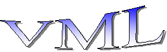

title: Using the Textpath Element description: Using the Textpath Element ms.assetid: 7728cdd6-d291-4ec5-b5e0-4a44a7d72eae keywords:
This topic describes VML, a feature that is deprecated as of Windows Internet Explorer 9. Webpages and applications that rely on VML should be migrated to SVG or other widely supported standards.
[!Note]
As of December 2011, this topic has been archived. As a result, it is no longer actively maintained. For more information, see Archived Content. For information, recommendations, and guidance regarding the current version of Windows Internet Explorer, see Internet Explorer Developer Center.
Â
In this topic, we will illustrate how to use the <textpath> element to draw text with various styles.
You can place the <textpath> sub-element inside <shape> or <shapetype> to draw text. You can then use the property attributes of the <textpath> sub-element to customize the text. You can also use the <formulas> sub-element to define the outline of the text.
For example, to create the text shown in the following picture, you can type the VML representation below. Notice that we use the <shapetype> element to define a prototype for the outline of the text. We then instantiate two shapes from the same shapetype. You can simply change the string property attribute to display different text.

<v:shapetype id="MyShape"
coordsize="21600,21600" adj="9931"
path="m0@0c7200@2,14400@1,21600,0m0@5c7200@6,14400@6,21600@5e">
<v:formulas>
<v:f eqn="val #0"/>
<v:f eqn="prod #0 3 4"/>
<v:f eqn="prod #0 5 4"/>
<v:f eqn="prod #0 3 8"/>
<v:f eqn="prod #0 1 8"/>
<v:f eqn="sum 21600 0 @3"/>
<v:f eqn="sum @4 21600 0"/>
<v:f eqn="prod #0 1 2"/>
<v:f eqn="prod @5 1 2"/>
<v:f eqn="sum @7 @8 0"/>
<v:f eqn="prod #0 7 8"/>
<v:f eqn="prod @5 1 3"/>
<v:f eqn="sum @1 @2 0"/>
<v:f eqn="sum @12 @0 0"/>
<v:f eqn="prod @13 1 4"/>
<v:f eqn="sum @11 14400 @14"/>
</v:formulas>
<v:path textpathok="t" />
<v:textpath on="t" fitshape="t" xscale="t"/>
</v:shapetype>
<v:shape type="#MyShape" style='position:relative; top:5; left:5;
width:261.6pt;height:71.45pt;' adj="8717" fillcolor="red" strokeweight="1pt">
<v:fill method="linear sigma" focus="100%" type="gradient"/>
<v:shadow on="t" offset="3pt"/> <v:textpath
style='font-family:"Arial Black";v-text-kern:t' trim="t"
fitpath="t" xscale="f" string="Hello World !"/>
</v:shape>
<v:shape type="#MyShape" style='position:relative; top:120; left:5; width:207pt;
height:63pt;' adj="8717" fillcolor="blue" strokeweight="2pt">
<v:fill method="linear sigma" focus="100%" type="gradient"/>
<v:shadow on="t" offset="3pt"/>
<v:textpath style='font-family:"Times New Roman";v-text-kern:t'
trim="t" fitpath="t" xscale="f" string="VML"/>
</v:shape>
For more information about this element, see the VML specification .
Â
Â